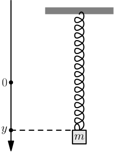
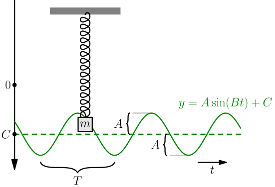

Physics Stuff¶
This is mostly a math tutorial, but the math is not useless or isolated from the real world in any way. In this chapter we'll look into a bunch of ways to use math things for calculating more concrete stuff in the real world.
This chapter assumes that you know derivatives.
There are also a few integrals, but all you need to know is that $\int f(x)\ dx$ means all antiderivatives of $f$. For example, $\int 2x\ dx = x^2 + C$ because $\frac{d}{dx}(x^2+C)=2x$, and in fact, all antiderivatives are $x^2+$ some constant and that's what the $C$ is doing.
I'll use SI units in this chapter, so instead of feet and pounds there will be metres and kilograms. If you live in a country that doesn't use SI units much, have a look at this table:
| Name of SI unit | Example value | Example value in non-SI units* |
|---|---|---|
| gram | 300 g | 10 oz |
| kilogram, $1\rm{kg} = 1000\rm g$ | 80 kg | 180 lbs |
| metre | 9.81 m | 32 feet |
| centimetre, $1\rm{cm}=\frac{1}{100}\rm{m}$ | 10 cm | 4 inches |
* approximately
Basic Stuff¶
Here's a list of things I'll use in this tutorial:
- Mass is usually denoted with $m$, and it's in kilograms.
- Time is almost always denoted with $t$ and measured with seconds.
- Distances are often denoted with e.g. $x$ or $y$. The SI unit of distances is metre.
- Velocity means how fast you are moving; in other words, it's the derivative of your location with respect to time:
The unit of velocity is $\rm{m}/\rm{s}$ because $dx$ is conceptually a tiny distance (metres) and $dt$ is a tiny time interval (seconds).
- Acceleration is the changing rate of the velocity. If it's positive, your velocity is getting bigger.
The $d^2$ notation means the derivative of the derivative of $x$; we take the derivative two times. It "works" like this:
$$\begin{align}a = \frac{d\frac{dx}{dt}}{dt} \mathop{=}^{\red ?}\frac{d \cdot dx}{dt \cdot dt} \mathop{=}^{\red ?}\frac{d^2x}{dt^2}\end{align}$$This makes no sense because $dx$ doesn't mean $d$ times $x$; it means the change of $x$. However, it's just notation, and the $\frac{d}{dt}x = \frac{dx}{dt}$ we are more used to doesn't make sense either.
It can be handy to think of $x$, $v$ and $a$ as functions of the time and write $x(t)$ instead of plain $x$, and this lets us use the usual $'$ notation:
$$\begin{align}v(t) &= x'(t) \\ a(t) &= x''(t)\end{align}$$Velocity is metres per second, so acceleration is metres per second per second, or $\frac{\rm{m}/\rm{s}}{\rm s} = \rm{m}/\rm{s}^2$. For example, $2\rm m/\rm{s}^2=\frac{2\rm m/\rm s}{\rm s}$ means that the velocity increases by $2\rm m/\rm s$ every second.
This is already enough stuff for calculating something fun.
Example: Feather and Hammer¶
Here's a famous experiment:
As you can see, the acceleration caused by gravity does not depend on the mass or shape of the object, and we can really see it if there's no air resistance. Let's try to calculate what that acceleration is.
Let's call the acceleration $g$ like gravity. It's a constant, so we can find the speed $v(t)$ easily. We'll choose this so that positive $v$ means going down; this way we can work with positive numbers and keep everything nice and simple.
$$\begin{align}v(t) = \int g\ dt = gt+C_1\end{align}$$At $t=0$ the hammer and feather were just about to be dropped, and their velocity was still $0$:
$$\begin{align}v(0) &= 0 \\ g \cdot 0 + C_1 &= 0 \\ C_1 &= 0 \\ v(t) &= gt\end{align}$$We can integrate again to find the height at time $t$. Let's call that $y(t)$ so that more $y$ means down.
$$\begin{align}y(t) &= \int v(t)\ dt = \int gt\ dt = \frac 1 2 gt^2 + C_2\end{align}$$The initial height of the objects seems to be about $1.5\rm m$, and dropping them took about one second:
$$\begin{align}y(1\rm s)-y(0\rm s) &= 1.5\rm m \\ \Bigl(\frac 1 2 g(1\rm s)^2 \rcancel{+ C_2}\Bigr) - \Bigl(\frac 1 2 g\cdot0^2 \rcancel{+ C_2}\Bigr) &= 1.5 \rm m \\ \frac 1 2 g(1\rm s)^2 &= 1.5 \rm m \\ g &= 2 \cdot \frac{1.5 \rm m}{(1\rm s)^2} = 3 \rm m/\rm{s}^2\end{align}$$A quick search for "moon gravity" gives $1.625 \rm m/\rm{s}^2$, and our thing is horribly wrong. I haven't figured out what goes wrong with it yet.
A similar experiment on Earth should yield $g\approx9.81 \rm m/\rm{s}^2$, and that's a $g$ value we'll use in most of our other examples.
Newton's Second Law¶
Here's Newton's second law, written in a mathy way:
$$\begin{align}\Sigma F = ma\end{align}$$Here $\Sigma$ means sum, and $\Sigma F$ is the sum of all forces that are pushing a mass and causing it an acceleration. In our previous example, there was only one force, the gravity $G$:
$$\begin{align}\green{\Sigma F} = m\blue{a} \\ \green{G} = m\blue{g}\end{align}$$In fact, the force caused by gravity is always $mg$. For example, let's calculate the force that gravity pulls a person of weight 80kg down at:
$$\begin{align}G = mg = 80\rm{kg} \cdot 9.81\rm m/\rm{s}^2 \approx 784\rm{kgm}/\rm{s}^2 = 784 \rm N\end{align}$$Here the $\rm N$ unit is 1 newton, defined so that $1\rm N = \frac{1\rm{kg} \cdot 1\rm m}{(1\rm s)^2}$.
If you're sitting in front of your computer, gravity is pulling you down, but your acceleration is zero because you don't fall through your chair. Let's figure out why:
$$\begin{align}\Sigma F = ma = m \cdot 0 = 0\end{align}$$This means that $\Sigma F \ne G$ because $G \ne 0$; instead $\Sigma F = G + M$ where $M$ is some kind of Mystery force that we'll try to explain.
$$\begin{align}\Sigma F &= 0 \\ G + M &= 0 \\ M &= -G\end{align}$$This mystery force is your chair holding up your butt, and it has a minus sign in the front because it goes to the opposite direction compared to gravity. That's why they cancel out nicely and you don't accelerate anywhere.
Newton's first and third law are closely related to Newton's second law. For example, the first law is a special case of the second law: it says that a mass stays in place or moves smoothly ($a=0$) if no forces apply to it ($\Sigma F = 0$).
Spring Stuff¶
This is kind of boring but the harmonic oscillation stuff below is fun, and it assumes that you know this stuff.
Let's say that we hang a spring off of something, and our $y$ axis is upside down so that $y=0$ is the bottom of the spring with the spring is hanging freely.
Now, let's attach a mass to the end of the spring:

Now there are two forces that act on our mass: gravity $G=mg$ and a spring force $F=-ky$. Here $k$ is a constant that describes the stiffness of our spring: more $k$ means that it pulls up with a bigger force. We're also multiplying by $y$, so pulling the spring more means that the spring resists it with a bigger force. The minus in the front means that the spring is pulling up.
The mass is not moving anywhere, so we can plug in $a=0$ to Newton's second law:
$$\begin{align}\Sigma F &= ma \\ G+F &= m \cdot 0 \\ mg-ky &= 0 \\ k &= \frac{mg}{y}\end{align}$$Let's calculate an example $k$ value so you get an idea of what it is. For example, let's say that we're on Earth and a 300 gram weight made the spring stretch by 10cm.
$$\begin{align}k = \frac{mg}{y} = \frac{0.30\rm{kg} \cdot 9.81\rm m/\rm{s}^2}{0.10\rm{m}} \approx 29 \rm N/\rm m\end{align}$$The unit is newtons per metres, so for every metre we pull we would get 29N more force.
Harmonic Oscillation¶
This sections assumes that you have read the above spring stuff and this sine wave stuff, and you know sine and cosine derivatives. You'll see soon what sine waves have to do with a spring and a bouncing mass.
Let's pull the mass down a bit and release it, so it starts to bounce up and down:
Note that we now have $y(t)$ at left; $y$ is no longer a constant, it depends on the time because the mass is moving up and down. Let's try to figure out how to calculate $y(t)$ values.
We have the same forces as before, but we cannot just plug in $a=0$. Instead we'll plug in the $a=y''(t)$ we learned here.
$$\begin{align}\Sigma F &= ma \\ G+F &= m\ y''(t) \\ mg-k\ y(t) &= m\ y''(t) \\ \green{y}''\green{(t)} &= -\frac k m \green{y(t)}+g\end{align}$$This thing with a function and its derivative in it is known as a differential equation. Let's try to solve it even though we have never seen differential equations before.
What we're trying to do is to find a function $y(t)$ whose derivative's derivative is $-\frac k m$ times the function plus a constant. Here's a funny idea – maybe $y(t)$ might be some kind of sine wave? The second derivative of sine is the same function with a minus in the front:
$$\begin{align}\frac{d^2}{dt^2} \green{\sin(t)} = \frac{d}{dt} \cos(t) = -\green{\sin(t)}\end{align}$$We just need to make it get multiplied by $\frac m k$ and produce the $g$ constant somehow, but those things are easy as you'll see in a moment.
First of all, the amplitude doesn't need to be 1 because we can move constants to front when taking derivatives:
$$\begin{align}\frac{d^2}{dt^2}(\green{A\sin(t)}) = \frac{d}{dt}(A\cos(t)) = -\green{A\sin(t)}\end{align}$$If we stick another constant $B$ inside the $\sin(\quad)$, the chain rule says that we need to multiply by the derivative of the inside stuff, and $\frac{d}{dt}(Bt)=B$:
$$\begin{align}\frac{d^2}{dt^2}(\green{A\sin(Bt)}) = \frac{d}{dt}(BA\cos(Bt)) = -\blue{B^2}\green{A\sin(Bt)}\end{align}$$Note how $B^2$ matches with the $\frac k m$:
$$\begin{align}\green{y}''\green{(t)} = -\blue{\frac k m}\green{y(t)}+g\end{align}$$Now we just need to produce the $g$ somehow. Added constants go away when taking derivatives, so maybe adding yet another constant $C$ does something useful?
$$\begin{align}\frac{d^2}{dt^2}(\green{A\sin(Bt)+C}) &= \frac{d}{dt}(BA\cos(Bt) + 0) \\ &= -B^2A\sin(Bt) \\ &= (-B^2)(\green{A\sin(Bt)+C}-C) \\ &= (-B^2)(\green{A\sin(Bt)+C})-(-B^2)C \\ &= -B^2(\green{A\sin(Bt)+C})+B^2C\end{align}$$There we go! Now we just need to compare our stuff:
$$\begin{align}\green{y}''\green{(t)} &= -\blue{\frac k m} \green{y(t)} + \maroon{g} \\ \frac{d^2}{dt^2}(\green{A\sin(Bt)+C}) &= -\blue{B^2}(\green{A\sin(Bt)+C}) + \maroon{B^2C}\end{align}$$Now we can conclude that $\green{y(t) = A\sin(Bt)+C}$ where $A$, $B$ and $C$ are constants. So our spring is really bouncing in some kind of sine wave, even though it seemed to have nothing to do with circles and sine waves! In fact, "harmonic oscillation" means oscillating in a sine wave.
Let's figure out what the constants mean. Based on the sine wave graph thing, $A$ is just making the graph taller, and $C$ is moving it down because we decided that more $y$ means down.

We'll figure out how to calculate the period time $T$ later, but let's find the $B$ and $C$ constants first. Again, we'll do this by comparing similar parts of the equations.
$$\begin{align}y''(t) &= -\blue{\frac k m} \green{y(t)} + \maroon{g} \\ &= -\blue{B^2}\green{y(t)} + \maroon{B^2C}\end{align}$$$$\begin{align}\blue{B^2} &= \blue{\frac k m} \\ B &= \sqrt{\frac k m}\end{align}$$$$\begin{align}\maroon{B^2C} &= \maroon g \\ \blue{\frac k m} C &= g \\ C &= \frac{mg}{k}\end{align}$$When we calculated the spring's height without any bouncing we ended up at $k=\frac{mg}{y}$, and we can turn that into $y=\frac{mg}{k}$. So being the center of the bouncing, $C$ is the height that the mass was at without any bouncing. This makes sense nicely.
Let's try to find out what the period $T$ has to do with our constants. In the sine wave graph thing we figured that $T$ is the period of $A\sin(\purple{\frac{\tau t}{T}})$ is $T$, and the sine wave part of $y(t)$ is $A\sin(\purple{Bt})$.
$$\begin{align}\purple{\frac{\tau \rcancel{\purple t}}{T}} &= \purple{B\rcancel{\purple t}} \\ T &= \frac \tau B = \frac{\tau}{\sqrt{\blue{B^2}}} = \frac{\tau}{\sqrt{\blue{k/m}}} \\ &= \frac{\tau}{\sqrt k / \sqrt m} = \frac{\tau\sqrt m}{\sqrt k} = \tau\sqrt{\frac m k}\end{align}$$There we go! Calculating the time it takes for the spring to bounce up and down involves the circle constant $\tau=2\pi$.
If $k$ is bigger, then $T$ is smaller; it makes sense because stiffer springs bounce faster. Similarly, a bigger mass makes the spring bounce slower, with a bigger $T$. If the spring is hanging freely without any mass, we have $m \approx 0$ and $T$ is very small; it means that the spring just vibrates quickly if you pull it and let it go.
Exercise
When we wanted to get a constant $B$ from the derivative of the inside, what other inside functions could we have chosen than $Bt$? Would using another inside function change our $\tau\sqrt{m/k}$ result? How could we make the spring vibrate so that the inside function would be different?